Heute
Ein Tag. Ein Eintrag. Bleibt, wie er ist.
Dein Eintrag ★
Der Morgen war zäh. Dann eine Stunde am Stück gearbeitet. Ohne Handy, ohne Nachrichten. Danach war der Kopf leicht.
🔒 verschlüsselt auf diesem Gerät ab morgen nicht mehr änderbar
Focus Journal ist ein Tagebuch für deinen Kopf. Du schreibst auf, was der Tag gebracht hat. Alles bleibt verschlüsselt auf deinem Gerät. Die App fragt nie nach dem Internet — sie darf gar nicht hinein.
Ein Tag. Ein Eintrag. Bleibt, wie er ist.
Dein Eintrag ★
Der Morgen war zäh. Dann eine Stunde am Stück gearbeitet. Ohne Handy, ohne Nachrichten. Danach war der Kopf leicht.
🔒 verschlüsselt auf diesem Gerät ab morgen nicht mehr änderbar
Funktionen
Jeder Bildschirm der App, und was dahintersteckt. Die Bilder kannst du hell oder dunkel ansehen — unabhängig davon, wie diese Seite gerade aussieht.
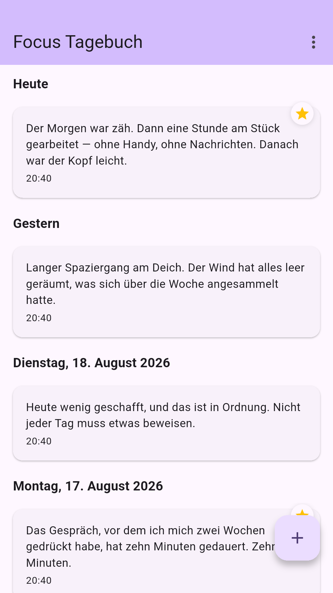
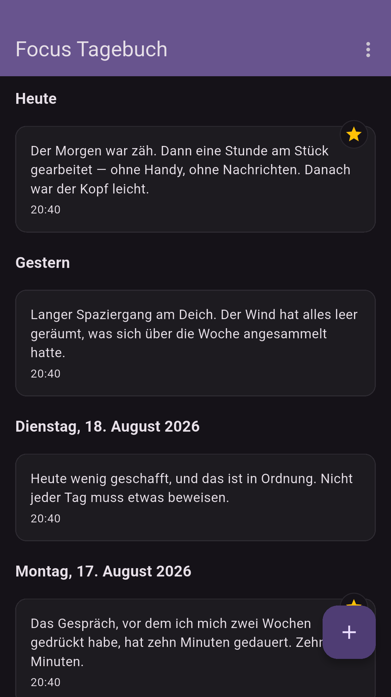
Übersicht
Alle Einträge liegen untereinander, nach Tagen gruppiert. Heute und Gestern stehen namentlich da, ältere Tage mit vollem Datum. Ein Stern am Rand markiert die Einträge, die dir wichtig sind.
Ein Tippen auf das Plus, und du schreibst den Eintrag für heute.
nach Tagen gruppiert · Heute und Gestern namentlich
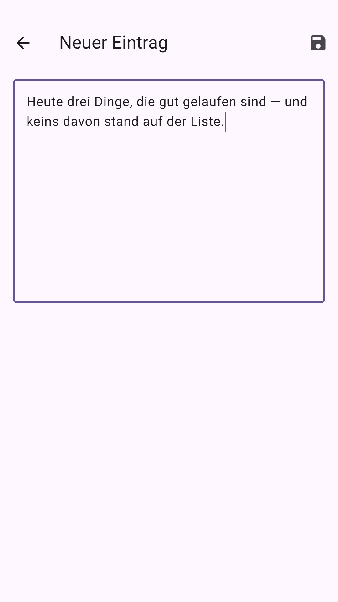
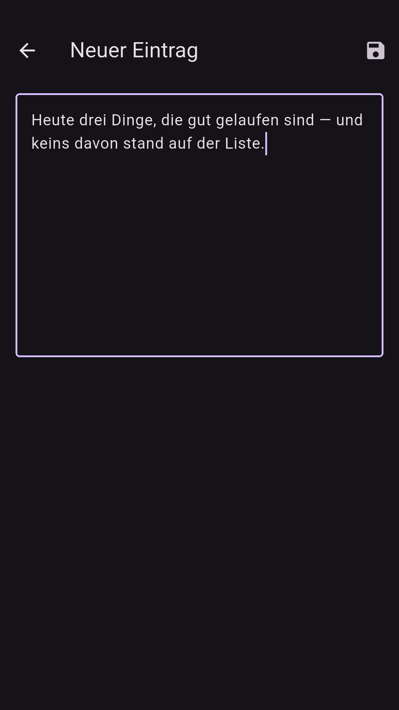
Schreiben
Du schreibst deinen Eintrag am Tag, an dem er passiert. Ändern und löschen kannst du ihn auch nur an diesem Tag. Danach steht er fest.
Das nimmt den Druck, alles später schön zu machen. Lesen kannst du alte Einträge natürlich immer.
änderbar und löschbar nur am selben Tag
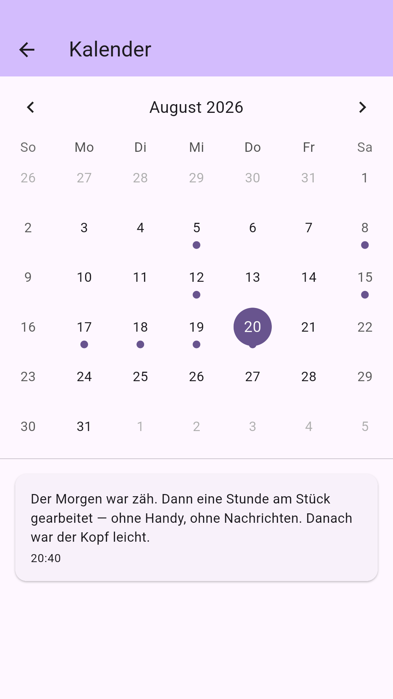
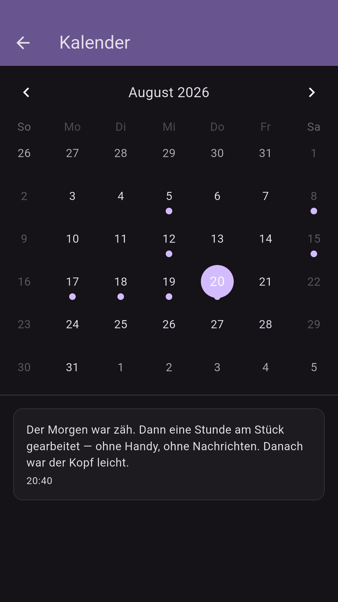
Kalender
Ein Punkt unter dem Datum zeigt, an welchen Tagen du geschrieben hast. Tippe auf einen Tag und lies nach, was damals los war.
So siehst du auf einen Blick, wie oft du dran warst.
ein Punkt je Tag mit Eintrag
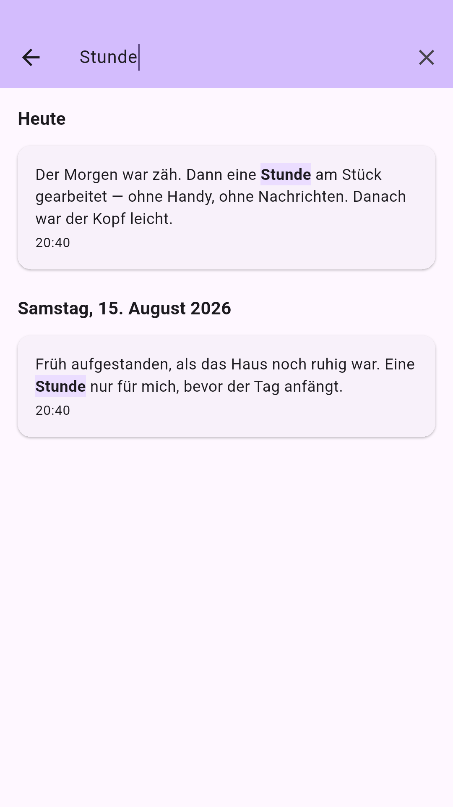
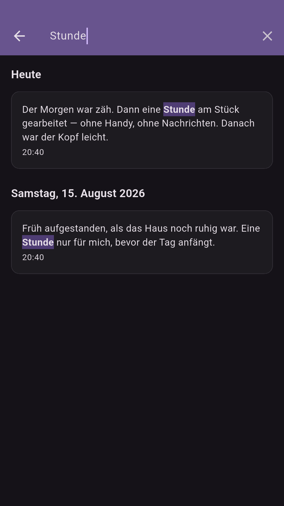
Suche
Such nach einem Wort, und die App zeigt dir jeden Eintrag, in dem es vorkommt — die Fundstelle ist im Text hervorgehoben.
Die Suche läuft auf deinem Gerät. Sie braucht kein Internet und schickt nichts weg.
Volltext über alle Einträge · läuft auf dem Gerät
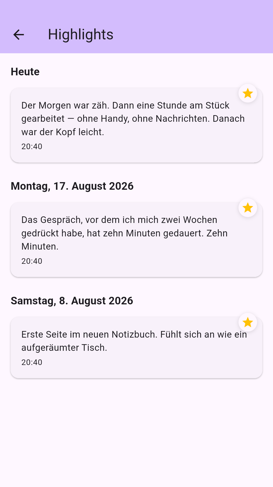
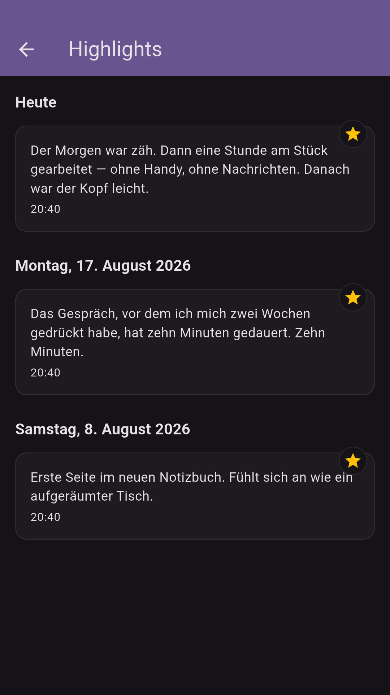
Highlights
Markiere besondere Einträge mit einem Stern. Die App sammelt alle Sterne an einem Ort, damit du die guten Tage wiederfindest, ohne zu blättern.
Magst du keine Sterne? Dann schalte sie in den Einstellungen einfach ab.
Sterne abschaltbar in den Einstellungen
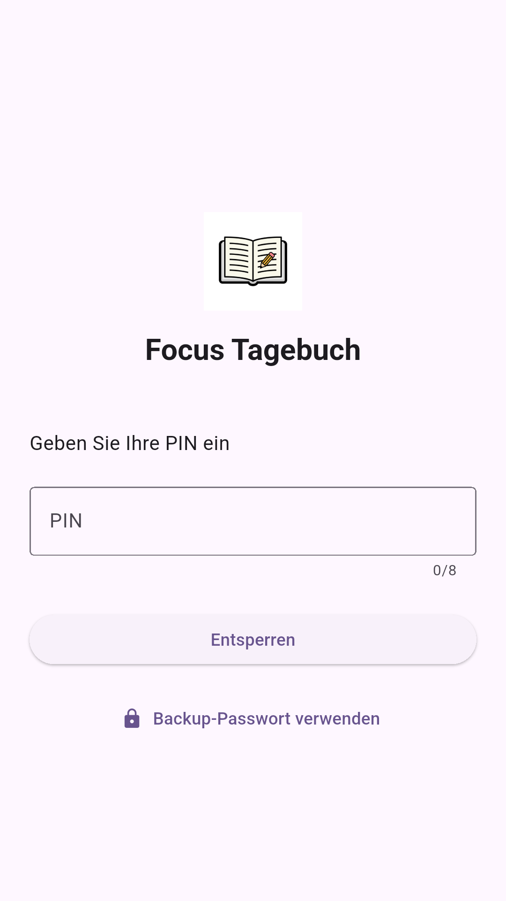
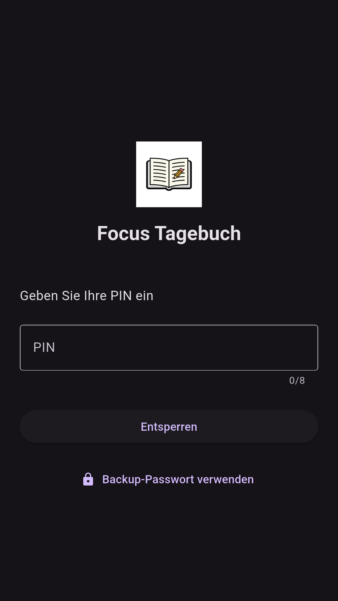
Sicherheit
Du schützt dein Tagebuch mit PIN, Passwort oder Muster. Fingerabdruck und Gesichtserkennung gehen auch. Legst du das Handy weg, sperrt sich die App von selbst. Nach fünf falschen Versuchen musst du warten — jedes Mal länger.
Die Einträge selbst liegen verschlüsselt auf dem Gerät, der Schlüssel dazu im geschützten Speicher deines Systems. Und die App hat gar keine Erlaubnis, ins Internet zu gehen: Es gibt keinen Server, auf dem etwas landen könnte.
PIN · Passwort · Muster · Biometrie — 5 Fehlversuche → 30 · 60 · 120 · 300 Sekunden Wartezeit
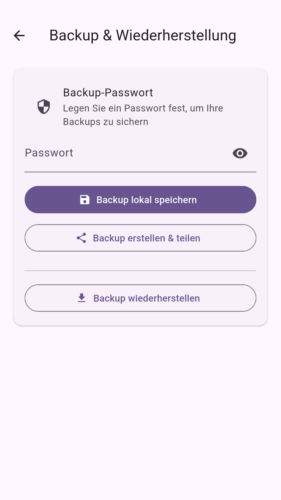
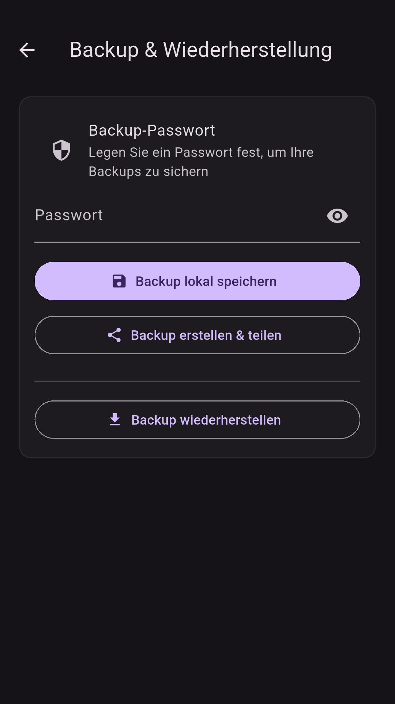
Backup
Mach ein Backup deines Tagebuchs. Es wird mit deinem Passwort verschlüsselt und als .fjb-Datei gespeichert — wohin, entscheidest du.
Beim Zurückspielen wählst du: alles ersetzen, nur Neues ergänzen oder klug zusammenführen.
AES-256 · PBKDF2-HMAC-SHA256 · 100.000 Runden · Format .fjb
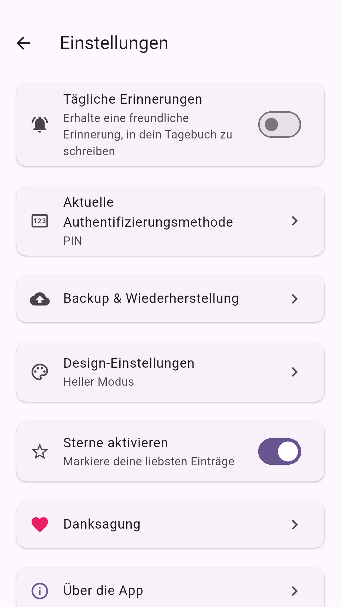
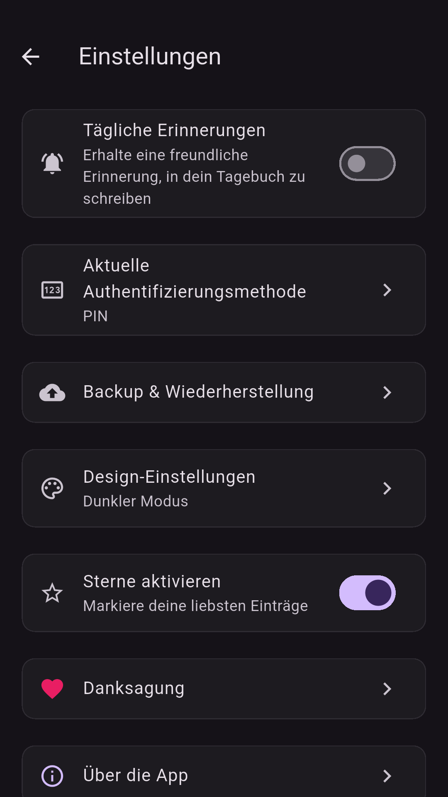
Erinnerung
Die App erinnert dich einmal am Tag ans Schreiben, wenn du magst. Die Uhrzeit suchst du dir aus. So wird aus dem Vorsatz eine Gewohnheit.
In denselben Einstellungen findest du deine Sperre, die Backups und den Schalter für die Sterne.
eine Erinnerung am Tag · Uhrzeit frei wählbar
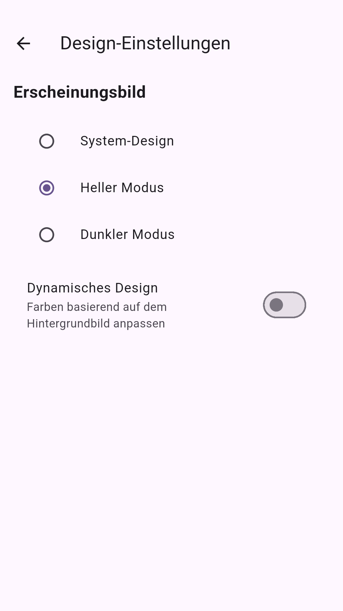
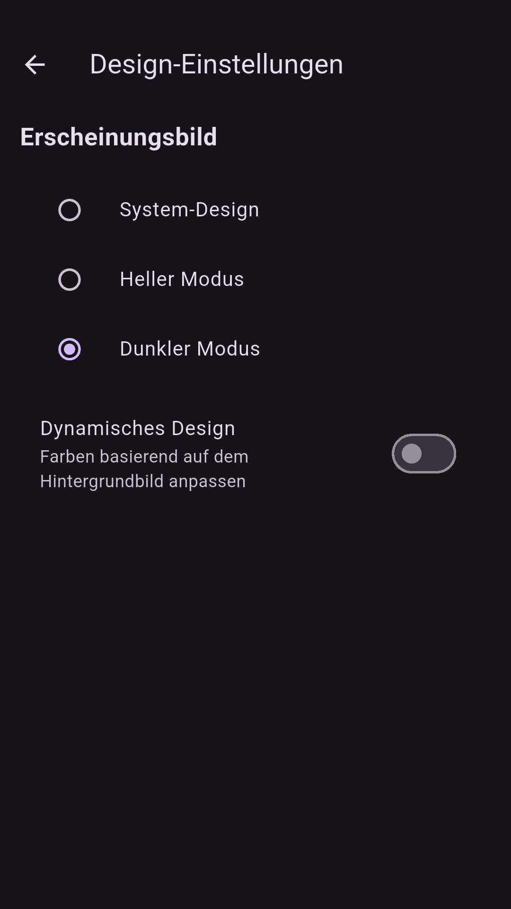
Design
Hell, dunkel oder wie dein System — du entscheidest. Auf neueren Android-Handys nimmt die App die Farben deines Hintergrundbilds auf.
Sie spricht 7 Sprachen: Deutsch, Englisch, Französisch, Spanisch, Italienisch, Niederländisch und Polnisch, und richtet sich nach deinem Gerät.
7 Sprachen · hell / dunkel / System · dynamische Farben ab Android 12
Downloads
Focus Journal ist kostenlos. Es gibt keine Werbung, kein Abo und keine Käufe in der App.
Über Google Play. Der Store hält die App aktuell und meldet dir neue Fassungen.
bald verfügbarDer Quellcode liegt offen. Mit Flutter baust du dir die App selbst:
flutter build apk
Geplant: iPhone & iPad · Windows · macOS · Linux · Web. Die App ist für diese Ziele vorbereitet, gebaut und veröffentlicht ist bisher keines.
Offener Quellcode
Der komplette Quellcode von Focus Journal ist öffentlich. Jeder darf nachlesen, was die App tut — und was sie nicht tut.
Die stärkste Aussage dieser Seite steht nicht in einem Werbetext, sondern in einer Datei, die du selbst öffnen kannst: dem Android-Manifest. Dort steht, was die App vom Betriebssystem verlangt — und dort fehlt der Internetzugang.
Was die App vom System verlangt
USE_BIOMETRICFingerabdruck und GesichtserkennungPOST_NOTIFICATIONSdie tägliche ErinnerungSCHEDULE_EXACT_ALARMdamit sie zur eingestellten Zeit kommtUSE_EXACT_ALARMdasselbe für neuere Android-FassungenRECEIVE_BOOT_COMPLETEDstellt die Erinnerung nach einem Neustart wieder herINTERNETwird nicht angefordert — die App kommt gar nicht ins Netzgithub.com/WariKoda/FocusJournal
Lizenz: GNU GPL v3.0
Fragen
Nein. Du öffnest die App, richtest deine Sperre ein und schreibst los. Es gibt keine Anmeldung und keine E-Mail-Adresse, die du angeben müsstest.
Ja — und zwar immer. Focus Journal fordert auf Android gar nicht erst die Erlaubnis an, ins Internet zu gehen. Schreiben, lesen, suchen, sichern: alles passiert auf deinem Gerät.
Nein. Ändern und löschen geht nur an dem Tag, an dem du den Eintrag geschrieben hast. Danach bleibt er so stehen. Lesen kannst du ihn für immer.
Dafür gibt es Backups. Mach regelmäßig eins und leg es an einen sicheren Ort. Auf dem neuen Gerät spielst du es wieder ein. Das Backup ist mit deinem Passwort verschlüsselt — merke es dir gut, denn ohne das Passwort kommt niemand mehr an die Einträge, auch du nicht.
Nur du. Die Einträge liegen verschlüsselt auf deinem Gerät, der Schlüssel dazu im geschützten Speicher deines Systems. Zusätzlich schützt du die App mit PIN, Passwort, Muster oder deinem Fingerabdruck. Es gibt keinen Server und keine Weitergabe an Dritte.
Nichts. Die App ist kostenlos und quelloffen. Es gibt keine Werbung, kein Abo und keine Käufe in der App. Es werden auch keine Daten gesammelt und verkauft — das wäre auch schwierig, weil die App nicht ins Internet darf.
Mehr steht nicht dazwischen: App laden, Sperre einrichten, den ersten Eintrag schreiben.
Focus Journal holen